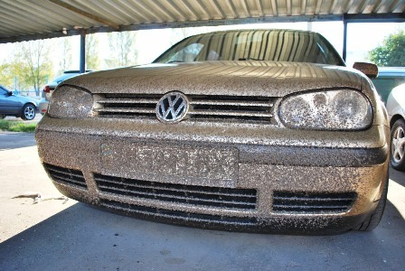
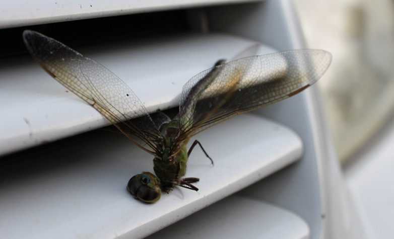

Следы насекомых, остающиеся на кузове автомобиля после скоростных загородных поездок, особенно распространены в летний сезон. Бытует мнение, что удалить их с автомобиля намного проще, чем тот же реагент, однако это не совсем так. Обычная мойка автомобиля часто не справляется – для удаления насекомых приходится применять другие меры.
Очистить кузов автомобиля от насекомых своими силами можно только с помощью специальных средств, подобрать нужное среди которых не так легко. Однако чистку необходимо проводить регулярно и как можно чаще, желательно – сразу после поездки. Почему? Дело в том, что в насекомых присутствуют кислоты, которые разъедают лакокрасочное покрытие вашего автомобиля, защитить которое может только полировка твердым воском. Но что делать, если ее не было?
Обычно удаление насекомых проводится после мойки автомобиля – на застарелые следы накладывается салфетка, которая предварительно смачивается в специальном чистящем средстве, после чего загрязнение легко удаляется с кузова.
Время, необходимое для удаление насекомых со всего кузова, как правило, колеблется в зависимости от «запущенности» ситуации, модели машины, а так же цвета лакокрасочного покрытия, потому как, к примеру, черная краска хуже переносит чистящие средства.
Наномойка Антидождь Инновационный автошампунь Полировка «Жидкое стекло»